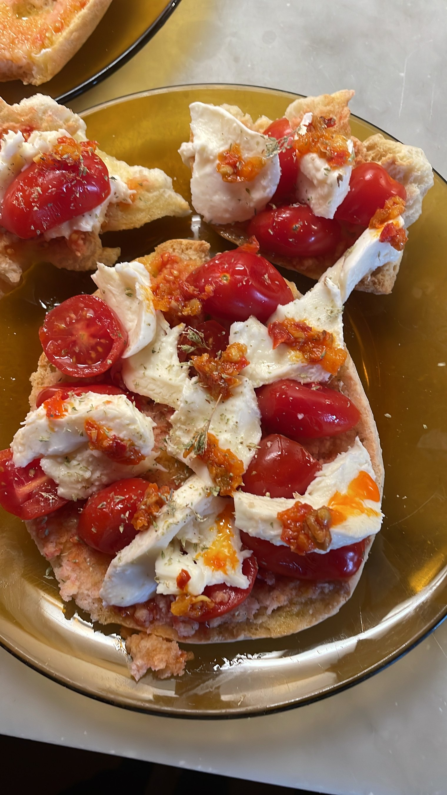

Friselle con cherry, mozzarella e bomba calabrese
Ingredienti
2×
- 4 friselle
- 200 g di pomodorini cherry
- olio d'oliva
- sale
- origano
- 1 mozzarella
- bomba calabrese

Preparazione
Passo 1
Bagnare velocemente 4 friselle in acqua fredda.
Passo 2
Condire con 200 g di pomodorini cherry tagliati a metà, olio d'oliva, sale e origano.
Passo 3
Aggiungere 1 mozzarella spezzettata e qualche cucchiaino di bomba calabrese per sopra.